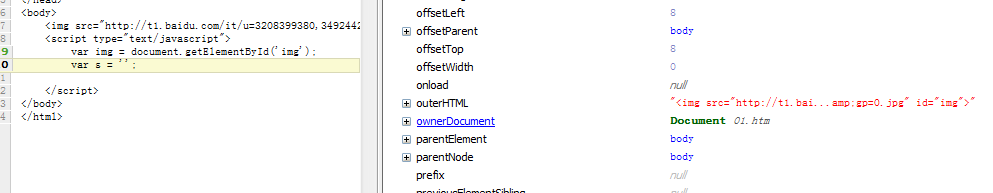

前言
今天本来准备先了解下node.js的，但是，看看我们一个小时前与一个小时后的差距：
既然如此，我们继续来搜集我们的前端面试题大业吧！！！
特别感谢玉面小肥鱼提供哟，@玉面小飞鱼
题目一览
JavaScript编程题
1、实现输出document对象中所有成员的名称和类型；
2、如何获得一个DOM元素的绝对位置？（获得元素位置，不依赖框架）
3、如何利用JS生成一个table？
4、实现预加载一张图片，加载完成后显示在网页中并设定其高度为50px，宽度为50px；
5、假设有一个4行td的table，将table里面td顺序颠倒；
6、模拟一个HashTable类，包含有add、remove、contains、length方法；
7、Ajax读取一个XML文档并进行解析的实例；
8、JS如何实现面向对象和继承机制？
9、JS模块的封装方法，比如怎样实现私有变量，不能直接赋值，只能通过公有方法；
10、对闭包的理解，闭包的好处和坏处？
11、对this指针的理解，可以列举几种使用情况？
12、对JS中函数绑定的理解？函数绑定可以使用哪两个函数？
13、jQuery的特点？
14、简述Ajax的异步机制。Ajax有哪些好处和弊端？
尼玛题还不少啊，公司一次性问完是要逆天吗？？？我们来一道一道做下吧，反正不吃亏！
第一题，document所有成员名称与属性
1、实现输出document对象中所有成员的名称和类型；
拿到这道题，我们来看看他是想考察神马呢？
PS：我弱弱的差点认为他考察的就是一个for in，我害怕的试了一下：

于是我发现他是一个对象，难道真的for in就完了？
1 for (var k in document) { 2 var v = document[k]; 3 alert(v + ':' + typeof (v)); 4 }
最后证明确实如此。。。怎么会这么简单呢？
思考
其实我猜面试官可能会在此上做一点文章，考察面试者对for in细节的认识，因为我们的原型链问题，我们会遍历一个对象的所有属性包括原型的一直到达object，而这显然不是我们想要的，所以此点各位可以拿来说下。
第二题，获取元素位置
2、如何获得一个DOM元素的绝对位置？（获得元素位置，不依赖框架）
这道题根本就是送分的（不能编码、不能设置断点情况我直接悲剧！），直接上断点：

所有信息一目了然，代码都省了，但是万一有坑怎么办，所以测试下IE吧：

看我们混杂模式也是这个样子，所以这个题是没有问题的，我们直接获取其属性即可。
第三题，生成table
3、如何利用JS生成一个table？
这道题是基本的dom操作，我这边直接略去了。。。。
第四题，图片加载问题
实现预加载一张图片，加载完成后显示在网页中并设定其高度为50px，宽度为50px；
这道题感觉有点意思，首先是预加载，然后是加载完毕后设置高度与宽度，那么什么是预加载呢？
顾名思义，WEB中的预加载就是在网页全部加载之前，对一些主要内容进行加载，以提供给用户更好的体验，减少等待的时间。
否则，如果一个页面的内容过于庞大，没有使用预加载技术的页面就会长时间的展现为一片空白，直到所有内容加载完毕。
图片的预加载技术使用较为广泛，一般的效果是网页中的图片由模糊变得清晰。
在说一个比较龊的问题，比如我们要让一张图片居中显示我们该怎样干？我们必须知道其尺寸才行，不然该功能是无法实现的。
图片的高宽必须要其加载结束时候才能获取，于是我们这里来做一个实验，先来张本地图片吧：
1 <html xmlns="http://www.w3.org/1999/xhtml"> 2 <head> 3 <title></title> 4 </head> 5 <body> 6 <img src="1.png" id="img" /> 7 <script type="text/javascript"> 8 var img = document.getElementById('img'); 9 var s = ''; 10 11 </script> 12 </body> 13 </html>
这张图片在本地，他加载速度是非常快的，所以我们这里问题不大，我们现在换成网络文件吧：
http://t1.baidu.com/it/u=3208399380,3492442390&fm=21&gp=0.jpg
这张图片很大滴哟，我们来试试：
1 <html xmlns="http://www.w3.org/1999/xhtml"> 2 <head> 3 <title></title> 4 </head> 5 <body> 6 <img src="http://t1.baidu.com/it/u=3208399380,3492442390&fm=21&gp=0.jpg" id="img" /> 7 <script type="text/javascript"> 8 var img = document.getElementById('img'); 9 var s = ''; 10 11 </script> 12 </body> 13 </html>

各位请看，我们这里神马都米有了！！！这个原因大家应该比较清楚了：
页面开始形成dom根据dom与css形成渲染树，这个过程结束后才会加载图片，所以我们这里获取不到图片信息很正常的。
一种简单的做法：
1 var imgLoad = function (url, callback) { 2 var img = new Image(); 3 img.src = url; 4 if (img.complete) { 5 callback(img.width, img.height); 6 } else { 7 img.onload = function () { 8 callback(img.width, img.height); 9 img.onload = null; 10 }; 11 }; 12 }; 13 imgLoad('http://t1.baidu.com/it/u=3208399380,3492442390&fm=21&gp=0.jpg');
这是一种比较常见的做法，便是等图片完全加载后再显示。
但是根据这个文章：http://www.planeart.cn/?p=1121
我们看到作者有不一样的做法，而且这里是值得我们思考与学习的：
以上需要图片加载结束才会显示，他认为其速度慢了一点，其认为浏览器获取了图片的头部信息，然后写了一个js时钟来做这件事情，其详细实现我们这里就不去管它了，因为我对使用时钟是不太赞成的，但是作者的思路还是值得学习。
现在再回国头来看看我们这道题，我们在callback中实现代码就可以完成这道题了，但是我这里想再看看，因为原作者说在图片完全加载完便获取了图片的高度与宽度，而且其实验也证明了这点，于是我们一起来看看图片加载流程吧。
图片加载流程
1 <html xmlns="http://www.w3.org/1999/xhtml"> 2 <head> 3 <title></title> 4 </head> 5 <body> 6 <img src="http://c-photo.i-part.com.tw/n1v1/4/1/9/0/780914/photo/book20/12760996629047.jpg" id="img" /> 7 <script type="text/javascript"> 8 var img = document.getElementById('img'); 9 setInterval(function () { 10 var s = ''; 11 }, 100); 12 </script> 13 </body> 14 </html>
经过测试，图片的尺寸确实会先出来，若是不使用定时器，我暂时也想不到办法。。。
于是，此题暂时如此吧，这里还是贴出原作者的代码吧，确实不错了：


{kind=link}
1 // 更新： 2 // 05.27: 1、保证回调执行顺序：error > ready > load；2、回调函数this指向img本身 3 // 04-02: 1、增加图片完全加载后的回调 2、提高性能 4 5 /** 6 * 图片头数据加载就绪事件 - 更快获取图片尺寸 7 * @version 2011.05.27 8 * @author TangBin 9 * @see http://www.planeart.cn/?p=1121 10 * @param {String} 图片路径 11 * @param {Function} 尺寸就绪 12 * @param {Function} 加载完毕 (可选) 13 * @param {Function} 加载错误 (可选) 14 * @example imgReady('http://www.google.com.hk/intl/zh-CN/images/logo_cn.png', function () { 15 alert('size ready: width=' + this.width + '; height=' + this.height); 16 }); 17 */ 18 var imgReady = (function () { 19 var list = [], intervalId = null, 20 21 // 用来执行队列 22 tick = function () { 23 var i = 0; 24 for (; i < list.length; i++) { 25 list[i].end ? list.splice(i--, 1) : list[i](); 26 }; 27 !list.length && stop(); 28 }, 29 30 // 停止所有定时器队列 31 stop = function () { 32 clearInterval(intervalId); 33 intervalId = null; 34 }; 35 36 return function (url, ready, load, error) { 37 var onready, width, height, newWidth, newHeight, 38 img = new Image(); 39 40 img.src = url; 41 42 // 如果图片被缓存，则直接返回缓存数据 43 if (img.complete) { 44 ready.call(img); 45 load && load.call(img); 46 return; 47 }; 48 49 width = img.width; 50 height = img.height; 51 52 // 加载错误后的事件 53 img.onerror = function () { 54 error && error.call(img); 55 onready.end = true; 56 img = img.onload = img.onerror = null; 57 }; 58 59 // 图片尺寸就绪 60 onready = function () { 61 newWidth = img.width; 62 newHeight = img.height; 63 if (newWidth !== width || newHeight !== height || 64 // 如果图片已经在其他地方加载可使用面积检测 65 newWidth * newHeight > 1024 66 ) { 67 ready.call(img); 68 onready.end = true; 69 }; 70 }; 71 onready(); 72 73 // 完全加载完毕的事件 74 img.onload = function () { 75 // onload在定时器时间差范围内可能比onready快 76 // 这里进行检查并保证onready优先执行 77 !onready.end && onready(); 78 79 load && load.call(img); 80 81 // IE gif动画会循环执行onload，置空onload即可 82 img = img.onload = img.onerror = null; 83 }; 84 85 // 加入队列中定期执行 86 if (!onready.end) { 87 list.push(onready); 88 // 无论何时只允许出现一个定时器，减少浏览器性能损耗 89 if (intervalId === null) intervalId = setInterval(tick, 40); 90 }; 91 }; 92 })();
第五题，td顺序颠倒
5、假设有一个4行td的table，将table里面td顺序颠倒；
这道题又属于那种不使用jquery比较烦的。。。我们这里获取td的dom直接向td.parent appendChild即可，但是操作时候需要注意一点兼容性问题。
第六题，模拟HashTable
因为javascript里面的对象字面量就是hashtable，他这么一说反而让我不知道怎么干了，于是上代码吧：
1 var HashTable = function () { 2 this.data = {}; 3 }; 4 HashTable.prototype.add = function (k, v) { 5 this.data[k] = v; //不存在便赋值，存在便更新，判断条件都给省了。。。 6 }; 7 HashTable.prototype.remove = function (k) { 8 if (this.data[k]) delete this.data[k]; 9 }; 10 HashTable.prototype.contains = function (v) { 11 var exist = false; 12 for (var k in this.data) { 13 if (v == this.data[k]) { 14 exist = true; 15 break; 16 } 17 } 18 return exist; 19 }; 20 HashTable.prototype.length = function () { 21 var len = 0; 22 for (var k in this.data) { 23 len++; 24 } 25 return len; 26 }; 27 var hs = new HashTable(); 28 29 hs.add('叶小钗', '叶小钗'); 30 hs.add('一页书', '一页书'); 31 hs.add('素还真', '素还真'); 32 var c = hs.contains('叶小钗'); 33 hs.remove('叶小钗'); 34 var d = hs.contains('叶小钗'); 35 var a = hs.length(); 36 37 var s = '';
第七题，ajax解析xml
Ajax读取一个XML文档并进行解析的实例；
在json出现之前，ajax返回的一般都是xml，其解析过程比较痛苦，当年做考试系统时候不知道json便解析的xml，那家伙确实费工夫，这里可以封装一个方法。我这里暂时略去，后面点补上。
.......需要补上
第八题，js面向对象
【初窥javascript奥秘之面向对象】封装与继承
第九题，模块封装
【javascript激增的思考01】模块化编程
第十题，闭包
【初窥javascript奥秘之闭包】叶大侠病都好了，求不踩了：）
第十一题，this的理解
【初窥javascript奥秘之让人捉摸不定的this】你知道现在this指向哪里吗？？？
第十二题，函数绑定的理解
12、对JS中函数绑定的理解？函数绑定可以使用哪两个函数？
这道题我完全没明白意思，可能是考察call与apply吧。
第十三题，jquery的特点
该题需要单独开贴讨论了，而且老夫神马都没有。
第十四题，ajax
14、简述Ajax的异步机制。Ajax有哪些好处和弊端？
【初窥javascript奥秘之Ajax】简述下你所知道的Ajax？
结语
感谢我们的玉面小飞鱼提供的这14道javascript的题目，我这里简要的回答了一番，很多不足，也请各位回答一篇哦，我这里下来后再继续跟进。